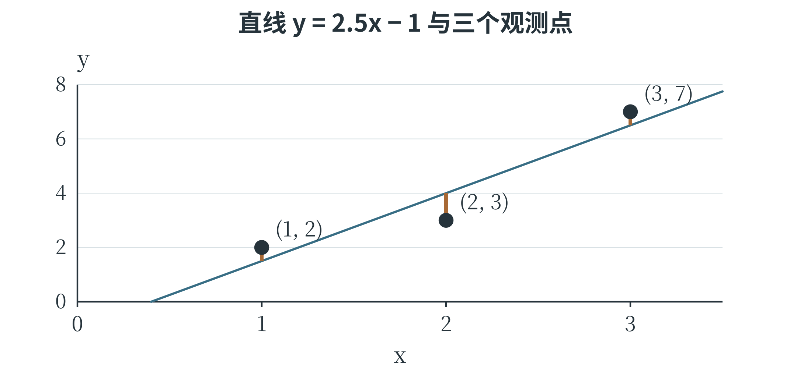
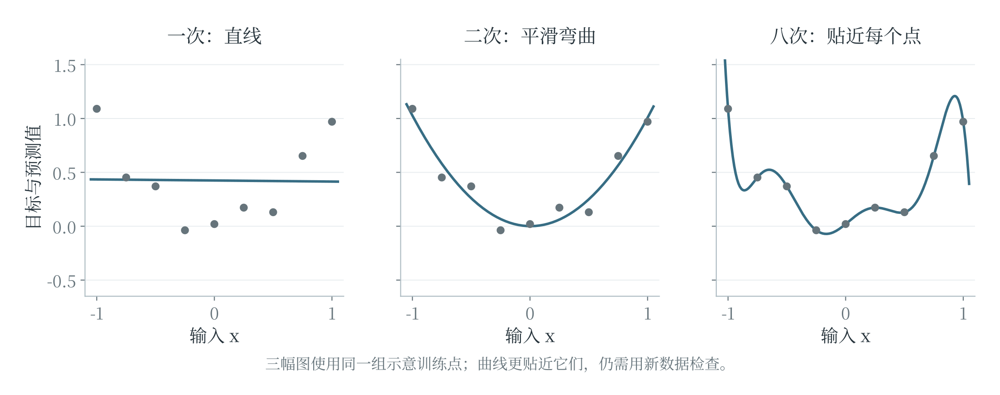

6.1 线性回归与多项式回归
一条直线怎样作预测
第三章用 \(y=kx+b\) 描述一次函数。把它用于数值预测时，常写为 \(\hat{y}=wx+b\)，称为一个单特征的线性回归模型。\(x\) 是输入特征，\(\hat{y}\) 是预测值，读作“\(y\) 帽”；真实目标值仍记为 \(y\)。\(w\) 是权重，决定输入变化对预测的影响，\(b\) 是截距，也常称为偏置。例如，一个按厘米记录的叶片面积估计模型规定：输入叶片长度 \(x\)，预测面积 \(\hat{y}=2x+1\) 平方厘米。长度为 4 厘米时，预测为 9 平方厘米；长度增加到 5 厘米，预测增加 2 平方厘米。这个公式是用于说明计算的示例，不是所有叶片都满足的生物学规律。权重的数值与单位有关，若长度改用毫米输入，就不能继续原样使用权重 2。
有多个特征时，可以分别加权后相加。例如，\(\hat{y}=w_1x_1+w_2x_2+b\) 同时使用长度和宽度。若权重为 2、3，偏置为 1，输入为 \((4,2)\)，预测就是 \(2\times4+3\times2+1=15\)。第三章的点积恰好表示这种加权和。输入增加到更多特征时，计算规则不变，只是对应相乘的项更多。线性模型并不要求所有权重为正。权重为负，表示在其他特征固定时，这个特征增加会使预测减小。
解释某个权重时，必须带上“其他特征固定”和“在当前模型中”这两个条件。输入特征常常彼此相关，模型权重也会受所选数据影响，不能仅凭一个负号就断言现实中的因果关系。
最小二乘法如何选择直线
模型的形式规定了能作出怎样的预测，训练则决定具体权重与偏置。对训练样本逐个计算误差 \(\hat{y}_i-y_i\)，把误差平方后相加，寻找使这个总和尽量小的参数，这种拟合原则称为最小二乘法。“二乘”指平方；它衡量的是在每个输入位置上，预测输出与真实输出之间的差，通常不是散点到直线的垂直最短距离。
设训练集有 \(n\) 个样本，用 \(L\) 表示均方误差，则：
\(L\) 称为损失函数，用一个数评价当前参数下预测与训练目标的差距。括号里先算模型输出，再减去真实值；下标 \(i\) 表示第几个样本。固定这批样本以后，\(x_i\) 和 \(y_i\) 不再改变，改变的是 \(w\) 和 \(b\)。因此，这个式子也可以看作以模型参数为输入、以误差大小为输出的函数。对于固定的 \(n\)，除不除以 \(n\) 不影响最小值对应的参数。一个式子中出现许多下标，仍然可以按样本逐条展开。例如，只有两条记录时，求和号表示先算 \((wx_1+b-y_1)^2\)，再算 \((wx_2+b-y_2)^2\)，两项相加后除以 2。参数在所有样本上共用，每条样本有自己的输入和目标，这正是模型从整批数据中学习共同规则的含义。
先看只有偏置的模型：它无论收到什么输入，总是预测同一个数 \(b\)。训练目标为 2、4、6 时，取 \(b=3\)，平方误差和为 \(1+1+9=11\)；取 \(b=4\)，则为 \(4+0+4=8\)。事实上，对这三个数，误差和可以整理为 \(3(b-4)^2+8\)，所以 \(b=4\) 时最小。这里的 4 正是目标值的平均数。这个简单例子说明，最小二乘并不是要让模型恰好经过每个点，而是在一批数据之间寻求按平方误差衡量的整体拟合。
对于同时含权重与偏置的单特征线性回归，也有直接计算的方法。设输入平均数为 \(\bar{x}\)，目标平均数为 \(\bar{y}\)，且输入并非全部相同，则最小二乘解为：
分子把输入与目标相对各自平均数的变化相乘后累加，分母衡量输入自身的分散程度。对输入 1、2、3 和目标 2、4、6，两组平均数为 2 和 4，分子为 \((-1)(-2)+0+1\times2=4\)，分母为 \(1+0+1=2\)，得到 \(w=2\)、\(b=0\)。所有点正好落在 \(y=2x\) 上，训练误差为零。真实测量通常没有这样整齐，得到的直线会在各点之间作出折中。
上述公式用于一元、带截距、普通最小二乘的情形。如果所有输入相同，分母为零，数据不足以唯一确定斜率；不能直接代入。多特征模型常借助线性代数工具求解，也可以使用后面介绍的梯度下降。
最小二乘确定了训练目标，求解算法则负责找到符合这一目标的参数。
对不完全共线的记录拟合一次
训练点恰好排成直线时，容易把拟合理解成“连起几个点”。现在使用三条不完全共线的记录：输入为 1、2、3，目标为 2、3、7。输入均值为 2，目标均值为 4，各项计算列在表 6-1 中。
表 6-1 最小二乘计算中的中心化数值
| 输入与目标 | 输入减均值 | 目标减均值 | 两个差的乘积 |
|---|---|---|---|
| (1,2) | −1 | −2 | 2 |
| (2,3) | 0 | −1 | 0 |
| (3,7) | 1 | 3 | 3 |
分子的总和为 5，分母为 \((-1)^2+0^2+1^2=2\)，所以 \(w=2.5\)、\(b=4-2.5\times2=-1\)。拟合直线为 \(\hat y=2.5x-1\)，三条预测分别为 1.5、4、6.5，误差分别为 \(-0.5\)、1、\(-0.5\)，均方误差为：

图中的短线沿纵向连接预测与观测，表示每条误差。中间的点位于直线下方，两端的点位于直线上方，直线在三条记录之间取得折中。如果改用 \(\hat y=2x\)，误差为 0、1、\(-1\)，MSE 为 \(2/3\)，比 0.5 大。虽然这条备选直线恰好经过第一条记录，却没有在整批数据上得到更小的平方误差。
可以用一个小函数计算任意给定参数的损失。这里让模型参数成为函数的输入，训练数据固定在列表中，便于观察“换一条直线”对结果的影响。
samples = [(1.0, 2.0), (2.0, 3.0), (3.0, 7.0)]
def line_loss(w, b):
total = 0.0
for x, y in samples:
prediction = w * x + b
total += (prediction - y) ** 2
return total / len(samples)
print(line_loss(2.5, -1.0)) # 0.5
print(round(line_loss(2.0, 0.0), 4)) # 0.6667
计算出最优直线以后，仍要用未参与拟合的记录评价预测。三条训练记录说明了如何确定参数，却不能单独证明这条关系适用于更大范围。一个模型的拟合过程与它在新数据上的可信程度，需要分别检查。
多项式让图像能够弯曲
一条直线每向右走相同距离，预测变化量都相同。如果散点明显呈弯曲趋势，可以增加 \(x^2\)、\(x^3\) 等特征，得到多项式回归。二次形式为 \(\hat{y}=a_2x^2+a_1x+b\)。例如，模型 \(\hat{y}=x^2+1\) 在输入 1、2、3 时分别输出 2、5、10，第三章中的抛物线因此直接成为一种预测曲线。虽然输出相对于原输入 \(x\) 是弯曲的，模型对参数 \(a_2\)、\(a_1\)、\(b\) 仍是加权相加，没有把参数平方或相乘。因此，可以先把原输入变成 \((x,x^2)\) 两个特征，再用线性回归学习这些特征的权重。“线性”在模型讨论中有时是相对于参数而言，不能只凭图像是否弯曲判断。
多个输入也可以构造交互项，例如 \(x_1x_2\)。它表示一个特征的影响随另一个特征而变化。多变量多项式中，一项的次数是各变量指数之和：\(x_1x_2\) 是二次项，\(x_1^2x_2\) 是三次项。增加这些项会让模型更加灵活，也会增加待学习参数；不能因为原始特征只有两个，就认为模型一定简单。

提高次数通常能降低同一训练集上的最小平方误差，却未必改善新数据预测。图 6-2 中，过分曲折的曲线迎合了训练点的细小波动，在点与点之间或观察范围之外可能变化很大。在训练数据覆盖范围之外作预测称为外推，此时模型依靠的是从已有范围延伸出的假设，应结合实际规律和新数据评价。第 6.7 节将进一步讨论模型复杂度怎样影响泛化。